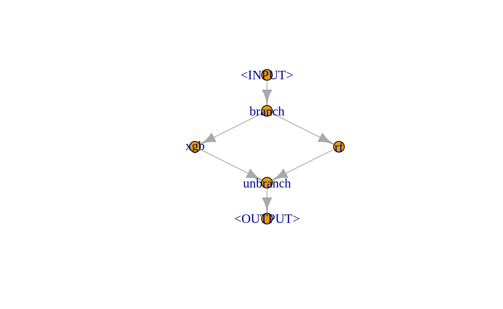
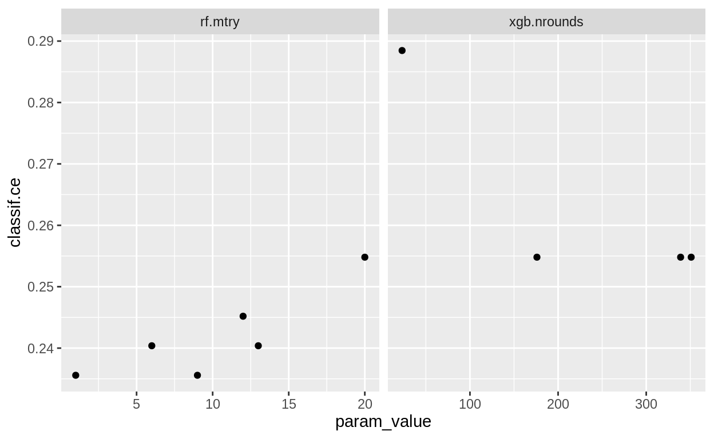

This use case shows how to tune over multiple learners for a single task.
This use case shows how to tune over multiple learners for a single task. You will learn the following:
This is an advanced use case. What should you know before:
AutoTunerAssume, you are given some ML task and what to compare a couple of learners, probably because you want to select the best of them at the end of the analysis. Thats a super standard scenario, it actually sounds so common that you might wonder: Why an (advanced) blog post about this? With pipelines? We will consider 2 cases: (a) Running the learners in their default, so without tuning, and (b) with tuning.
Lets load some packages and define our learners.
set.seed(1)
library(mlr3)
library(mlr3tuning)
library(mlr3pipelines)
library(mlr3learners)
library(paradox)
lgr::get_logger("mlr3")$set_threshold("warn")
lgr::get_logger("bbotk")$set_threshold("warn")
learns = list(
lrn("classif.xgboost", id = "xgb"),
lrn("classif.ranger", id = "rf")
)
learns_ids = sapply(learns, function(x) x$id)
task = tsk("sonar") # some random data for this demo
cv1 = rsmp("cv", folds = 2) # inner loop for nested CV
cv2 = rsmp("cv", folds = 5) # outer loop for nested CV
Assume we dont want to perform tuning and or with running all learner in their respective defaults. Simply run benchmark on the learners and the tasks. That tabulates our results nicely and shows us what works best.
bg = benchmark_grid(task, learns, cv2)
b = benchmark(bg)
b$aggregate(measures = msr("classif.ce"))
nr resample_result task_id learner_id resampling_id iters classif.ce
1: 1 <ResampleResult[21]> sonar xgb cv 5 0.2743322
2: 2 <ResampleResult[21]> sonar rf cv 5 0.1728223Ok, why would we ever want to change the simple approach above - and use pipelines / tuning for this? Three reasons:
benchmark is actually statistically flawed, insofar if we report the error of the numerically best method from the benchmark table as its estimated future performance. If we do that we have optimized on the CV (we basically ran a grid search over our learners!) and we know that this is will produce optimistically biased results. NB: This is a somewhat ridiculous criticism if we are going over only a handful of options, and the bias will be very small. But it will be noticeable if we do this over hundreds of learners, so it is important to understand the underlying problem. This is a somewhat subtle point, and this gallery post is more about technical hints for mlr3, so we will stop this discussion here.The pipeline just has a single purpose in this example: It should allow us to switch between different learners, depending on a hyperparameter. The pipe consists of three elements:
branch pipes incoming data to one of the following elements, on different data channels. We can name these channel on construction with options.gunion)unbranch combines the forked paths at the end.pipe =
po("branch", options = learns_ids) %>>%
gunion(lapply(learns, po)) %>>%
po("unbranch")
pipe$plot()

The pipeline has now quite a lot of available hyperparameters. It includes all hyperparameters from all contained learners. But as we dont tune them here (yet), we dont care (yet). But the first hyperparameter is special. branch.selection controls over which (named) branching channel our data flows.
pipe$param_set$ids()
[1] "branch.selection" "xgb.booster"
[3] "xgb.watchlist" "xgb.eta"
[5] "xgb.gamma" "xgb.max_depth"
[7] "xgb.min_child_weight" "xgb.subsample"
[9] "xgb.colsample_bytree" "xgb.colsample_bylevel"
[11] "xgb.colsample_bynode" "xgb.num_parallel_tree"
[13] "xgb.lambda" "xgb.lambda_bias"
[15] "xgb.alpha" "xgb.objective"
[17] "xgb.eval_metric" "xgb.base_score"
[19] "xgb.max_delta_step" "xgb.missing"
[21] "xgb.monotone_constraints" "xgb.tweedie_variance_power"
[23] "xgb.nthread" "xgb.nrounds"
[25] "xgb.feval" "xgb.verbose"
[27] "xgb.print_every_n" "xgb.early_stopping_rounds"
[29] "xgb.maximize" "xgb.sample_type"
[31] "xgb.normalize_type" "xgb.rate_drop"
[33] "xgb.skip_drop" "xgb.one_drop"
[35] "xgb.tree_method" "xgb.grow_policy"
[37] "xgb.max_leaves" "xgb.max_bin"
[39] "xgb.callbacks" "xgb.sketch_eps"
[41] "xgb.scale_pos_weight" "xgb.updater"
[43] "xgb.refresh_leaf" "xgb.feature_selector"
[45] "xgb.top_k" "xgb.predictor"
[47] "xgb.save_period" "xgb.save_name"
[49] "xgb.xgb_model" "xgb.interaction_constraints"
[51] "xgb.outputmargin" "xgb.ntreelimit"
[53] "xgb.predleaf" "xgb.predcontrib"
[55] "xgb.approxcontrib" "xgb.predinteraction"
[57] "xgb.reshape" "xgb.training"
[59] "rf.num.trees" "rf.mtry"
[61] "rf.importance" "rf.write.forest"
[63] "rf.min.node.size" "rf.replace"
[65] "rf.sample.fraction" "rf.class.weights"
[67] "rf.splitrule" "rf.num.random.splits"
[69] "rf.split.select.weights" "rf.always.split.variables"
[71] "rf.respect.unordered.factors" "rf.scale.permutation.importance"
[73] "rf.keep.inbag" "rf.holdout"
[75] "rf.num.threads" "rf.save.memory"
[77] "rf.verbose" "rf.oob.error"
[79] "rf.max.depth" "rf.alpha"
[81] "rf.min.prop" "rf.regularization.factor"
[83] "rf.regularization.usedepth" "rf.seed"
[85] "rf.minprop" "rf.predict.all"
[87] "rf.se.method" pipe$param_set$params$branch.selection
id class lower upper levels default
1: branch.selection ParamFct NA NA xgb,rf <NoDefault[3]>We can now tune over this pipeline, and probably running grid search seems a good idea to touch every available learner. NB: We have now written down in (much more complicated code) what we did before with benchmark.
glrn = GraphLearner$new(pipe, id = "g") # connect pipe to mlr3
ps = ParamSet$new(list(
ParamFct$new("branch.selection", levels = c("rf", "xgb"))
))
instance = TuningInstanceSingleCrit$new(
task = task,
learner = glrn,
resampling = cv1,
measure = msr("classif.ce"),
search_space = ps,
terminator = trm("none")
)
tuner = tnr("grid_search")
tuner$optimize(instance)
branch.selection learner_param_vals x_domain classif.ce
1: rf <list[3]> <list[1]> 0.2355769instance$archive$data("x_domain")
branch.selection classif.ce uhash
1: xgb 0.3413462 794fae5f-f632-49cf-afc8-4bdf029d1238
2: rf 0.2355769 93824ed5-1aca-4469-9cd3-43f5f22fbf4a
timestamp batch_nr x_domain_branch.selection
1: 2020-10-29 04:49:58 1 xgb
2: 2020-10-29 04:49:59 2 rfBut: Via this approach we can now get unbiased performance results via nested resampling and using the AutoTuner (which would make much more sense if we would select from 100 models and not 2).
at = AutoTuner$new(
learner = glrn,
resampling = cv1,
measure = msr("classif.ce"),
search_space = ps,
terminator = trm("none"),
tuner = tuner
)
rr = resample(task, at, cv2, store_models = TRUE)
# access 1st inner tuning result
ll = rr$learners[[1]]$model$tuning_instance
ll$result
branch.selection learner_param_vals x_domain classif.ce
1: rf <list[3]> <list[1]> 0.246988ll$archive$data()
branch.selection classif.ce uhash x_domain
1: xgb 0.3253012 695a39c3-98ae-4309-b538-1fd78e12816b <list[1]>
2: rf 0.2469880 f58764da-4096-4f88-ae1f-ba0cf188a885 <list[1]>
timestamp batch_nr
1: 2020-10-29 04:50:03 1
2: 2020-10-29 04:50:04 2Now lets select from our given set of models and tune their hyperparameters. One way to do this is to define a search space for each individual learner, wrap them all with the AutoTuner, then call benchmark() on them. As this is pretty standard, we will skip this here, and show an even neater option, where you can tune over models and hyperparameters in one go. If you have quite a large space of potential learners and combine this with an efficient tuning algorithm, this can save quite some time in tuning as you can learn during optimization which options work best and focus on them. NB: Many AutoML systems work in a very similar way.
Remember, that the pipeline contains a joint set of all contained hyperparameters. Prefixed with the respective PipeOp ID, to make names unique.
as.data.table(pipe$param_set)[,1:4]
id class lower upper
1: branch.selection ParamFct NA NA
2: xgb.booster ParamFct NA NA
3: xgb.watchlist ParamUty NA NA
4: xgb.eta ParamDbl 0 1
5: xgb.gamma ParamDbl 0 Inf
6: xgb.max_depth ParamInt 0 Inf
7: xgb.min_child_weight ParamDbl 0 Inf
8: xgb.subsample ParamDbl 0 1
9: xgb.colsample_bytree ParamDbl 0 1
10: xgb.colsample_bylevel ParamDbl 0 1
11: xgb.colsample_bynode ParamDbl 0 1
12: xgb.num_parallel_tree ParamInt 1 Inf
13: xgb.lambda ParamDbl 0 Inf
14: xgb.lambda_bias ParamDbl 0 Inf
15: xgb.alpha ParamDbl 0 Inf
16: xgb.objective ParamUty NA NA
17: xgb.eval_metric ParamUty NA NA
18: xgb.base_score ParamDbl -Inf Inf
19: xgb.max_delta_step ParamDbl 0 Inf
20: xgb.missing ParamDbl -Inf Inf
21: xgb.monotone_constraints ParamInt -1 1
22: xgb.tweedie_variance_power ParamDbl 1 2
23: xgb.nthread ParamInt 1 Inf
24: xgb.nrounds ParamInt 1 Inf
25: xgb.feval ParamUty NA NA
26: xgb.verbose ParamInt 0 2
27: xgb.print_every_n ParamInt 1 Inf
28: xgb.early_stopping_rounds ParamInt 1 Inf
29: xgb.maximize ParamLgl NA NA
30: xgb.sample_type ParamFct NA NA
31: xgb.normalize_type ParamFct NA NA
32: xgb.rate_drop ParamDbl 0 1
33: xgb.skip_drop ParamDbl 0 1
34: xgb.one_drop ParamLgl NA NA
35: xgb.tree_method ParamFct NA NA
36: xgb.grow_policy ParamFct NA NA
37: xgb.max_leaves ParamInt 0 Inf
38: xgb.max_bin ParamInt 2 Inf
39: xgb.callbacks ParamUty NA NA
40: xgb.sketch_eps ParamDbl 0 1
41: xgb.scale_pos_weight ParamDbl -Inf Inf
42: xgb.updater ParamUty NA NA
43: xgb.refresh_leaf ParamLgl NA NA
44: xgb.feature_selector ParamFct NA NA
45: xgb.top_k ParamInt 0 Inf
46: xgb.predictor ParamFct NA NA
47: xgb.save_period ParamInt 0 Inf
48: xgb.save_name ParamUty NA NA
49: xgb.xgb_model ParamUty NA NA
50: xgb.interaction_constraints ParamUty NA NA
51: xgb.outputmargin ParamLgl NA NA
52: xgb.ntreelimit ParamInt 1 Inf
53: xgb.predleaf ParamLgl NA NA
54: xgb.predcontrib ParamLgl NA NA
55: xgb.approxcontrib ParamLgl NA NA
56: xgb.predinteraction ParamLgl NA NA
57: xgb.reshape ParamLgl NA NA
58: xgb.training ParamLgl NA NA
59: rf.num.trees ParamInt 1 Inf
60: rf.mtry ParamInt 1 Inf
61: rf.importance ParamFct NA NA
62: rf.write.forest ParamLgl NA NA
63: rf.min.node.size ParamInt 1 Inf
64: rf.replace ParamLgl NA NA
65: rf.sample.fraction ParamDbl 0 1
66: rf.class.weights ParamDbl -Inf Inf
67: rf.splitrule ParamFct NA NA
68: rf.num.random.splits ParamInt 1 Inf
69: rf.split.select.weights ParamDbl 0 1
70: rf.always.split.variables ParamUty NA NA
71: rf.respect.unordered.factors ParamFct NA NA
72: rf.scale.permutation.importance ParamLgl NA NA
73: rf.keep.inbag ParamLgl NA NA
74: rf.holdout ParamLgl NA NA
75: rf.num.threads ParamInt 1 Inf
76: rf.save.memory ParamLgl NA NA
77: rf.verbose ParamLgl NA NA
78: rf.oob.error ParamLgl NA NA
79: rf.max.depth ParamInt -Inf Inf
80: rf.alpha ParamDbl -Inf Inf
81: rf.min.prop ParamDbl -Inf Inf
82: rf.regularization.factor ParamUty NA NA
83: rf.regularization.usedepth ParamLgl NA NA
84: rf.seed ParamInt -Inf Inf
85: rf.minprop ParamDbl -Inf Inf
86: rf.predict.all ParamLgl NA NA
87: rf.se.method ParamFct NA NA
id class lower upperWe decide to tune the mtry parameter of the random forest and the nrounds parameter of xgboost. Additionally, we tune branching parameter that selects our learner.
We also have to reflect the hierarchical order of the parameter sets (admittedly, this is somewhat inconvenient). We can only set the mtry value if the pipe is configured to use the random forest (ranger). The same applies for the xgboost parameter.
ps = ParamSet$new(list(
ParamFct$new("branch.selection", levels = c("rf", "xgb")),
# more complicated, but programmtic way for the above:
# pipe$param_set$params$branch.selection$clone()
ParamInt$new("rf.mtry", lower = 1L, upper = 20L),
ParamInt$new("xgb.nrounds", lower = 1, upper = 500)
))
# FIXME this seems pretty inconvenient
ps$add_dep("rf.mtry", "branch.selection", CondEqual$new("rf"))
ps$add_dep("xgb.nrounds", "branch.selection", CondEqual$new("xgb"))
Very similar code as before, we just swap out the search space. And now use random search.
instance = TuningInstanceSingleCrit$new(
task = task,
learner = glrn,
resampling = cv1,
measure = msr("classif.ce"),
search_space = ps,
terminator = trm("evals", n_evals = 10)
)
tuner = tnr("random_search")
tuner$optimize(instance)
branch.selection rf.mtry xgb.nrounds learner_param_vals x_domain classif.ce
1: rf 1 NA <list[4]> <list[2]> 0.2355769instance$archive$data(unnest = "x_domain")
branch.selection rf.mtry xgb.nrounds classif.ce
1: rf 13 NA 0.2403846
2: xgb NA 23 0.2884615
3: xgb NA 351 0.2548077
4: xgb NA 339 0.2548077
5: rf 6 NA 0.2403846
6: rf 12 NA 0.2451923
7: xgb NA 176 0.2548077
8: rf 20 NA 0.2548077
9: rf 1 NA 0.2355769
10: rf 9 NA 0.2355769
uhash timestamp batch_nr
1: 03a8cae9-022e-4ab3-b19f-7dc9cb453ff0 2020-10-29 04:50:16 1
2: bd484a34-cfc0-4432-a366-2e57d2fc5bab 2020-10-29 04:50:17 2
3: b269f835-a55d-4d12-a8a4-8f496355f133 2020-10-29 04:50:18 3
4: af1be537-aa2f-4967-9018-d47129b3a03d 2020-10-29 04:50:19 4
5: 07d24b3c-8208-4815-b296-f6859bf4db98 2020-10-29 04:50:20 5
6: 1432f1ae-21dd-42ef-9cf7-e958357bcab2 2020-10-29 04:50:21 6
7: b72b2d26-33e6-45a0-9905-42fdeddb9d89 2020-10-29 04:50:22 7
8: 6a9efcb1-e191-4b5f-b3d1-6125d9929f0b 2020-10-29 04:50:24 8
9: f6070710-122d-4d10-99e8-c33f76ab4230 2020-10-29 04:50:25 9
10: 87dee0d4-9889-447b-9e14-6507b88ae035 2020-10-29 04:50:26 10
x_domain_branch.selection x_domain_rf.mtry x_domain_xgb.nrounds
1: rf 13 NA
2: xgb NA 23
3: xgb NA 351
4: xgb NA 339
5: rf 6 NA
6: rf 12 NA
7: xgb NA 176
8: rf 20 NA
9: rf 1 NA
10: rf 9 NAThe following shows a quick way to visualize the tuning results.
resdf = instance$archive$data(unnest = "x_domain")
resdf = reshape(resdf,
varying = c("xgb.nrounds","rf.mtry"),
v.name = "param_value",
timevar = "param",
times = c("xgb.nrounds","rf.mtry"),
direction="long")
library(ggplot2)
g = ggplot(resdf, aes(x = param_value, y = classif.ce))
g = g + geom_point()
g = g + facet_grid(~param, scales = "free")
g

Nested resampling, now really needed:
at = AutoTuner$new(
learner = glrn,
resampling = cv1,
measure = msr("classif.ce"),
search_space = ps,
terminator = trm("evals", n_evals = 10),
tuner = tuner
)
rr = resample(task, at, cv2, store_models = TRUE)
# access 1st inner tuning result
ll = rr$learners[[1]]$model$tuning_instance
ll$result
branch.selection rf.mtry xgb.nrounds learner_param_vals x_domain classif.ce
1: rf 6 NA <list[4]> <list[2]> 0.2048193ll$archive$data()
branch.selection rf.mtry xgb.nrounds classif.ce
1: rf 18 NA 0.2289157
2: rf 6 NA 0.2048193
3: rf 14 NA 0.2168675
4: xgb NA 341 0.2469880
5: xgb NA 377 0.2469880
6: rf 9 NA 0.2228916
7: xgb NA 51 0.2469880
8: rf 6 NA 0.2228916
9: rf 17 NA 0.2168675
10: xgb NA 121 0.2469880
uhash x_domain timestamp batch_nr
1: d657f9ac-d402-40c6-a85c-e8067eb1a9da <list[2]> 2020-10-29 04:51:00 1
2: a4cd7342-479f-45be-b99e-b5319c1eef8e <list[2]> 2020-10-29 04:51:01 2
3: ddc5f4a0-b0ad-418f-987c-38a1b1cf034c <list[2]> 2020-10-29 04:51:02 3
4: 9c8916da-8039-4546-a0fb-8ef2acf7178a <list[2]> 2020-10-29 04:51:04 4
5: 8a5009c2-7d2e-4aef-8a24-2d342ec143f2 <list[2]> 2020-10-29 04:51:05 5
6: ad300867-a402-44e6-8888-d43de483e922 <list[2]> 2020-10-29 04:51:06 6
7: 98a72e0c-a1ba-4a6d-ad66-3e0b7db1ab3f <list[2]> 2020-10-29 04:51:07 7
8: 710a9732-176c-43d7-9636-81ff60000788 <list[2]> 2020-10-29 04:51:08 8
9: 5c334c4e-7938-444e-8f84-d838076db7ee <list[2]> 2020-10-29 04:51:09 9
10: 267136f7-8d53-4a88-8676-f7c075f8db75 <list[2]> 2020-10-29 04:51:10 10For attribution, please cite this work as
Richter & Bischl (2020, Feb. 1). mlr3gallery: Tuning Over Multiple Learners. Retrieved from https://mlr3gallery.mlr-org.com/posts/2020-02-01-tuning-multiplexer/
BibTeX citation
@misc{richter2020tuning,
author = {Richter, Jakob and Bischl, Bernd},
title = {mlr3gallery: Tuning Over Multiple Learners},
url = {https://mlr3gallery.mlr-org.com/posts/2020-02-01-tuning-multiplexer/},
year = {2020}
}